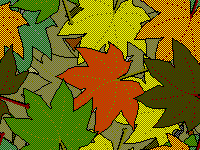

Well, this site has been up for a year now and i would like to thank everybody who has read on it.
The sad bit is that according to google search console, nobody has visited this site yet! Which means that for the moment I'm writing this for myself.
I am, however also writing this for the future and whomever might read it then, if you're one of those people, thank you!
I do have some plans:
The first one is self-explanatory, but the third might cause confusion.
I am a skeptic so i though it might be fun to debunk stories of people who claimed to be abducted by aliens, have photos of aliens or general conspiracy theories.
Otherwise i will do more of the OS stuff and bootleg games stuff.
I do have two plug-and-plays and some similar stuff. That i might review one day.
There might be a possibility that i change the domain from FillaNilla.github.io to FilipNilsen.github.io so, you might wanna bookmark that, in case i change it.
Whatever the future brings, Thank you for reading!!
